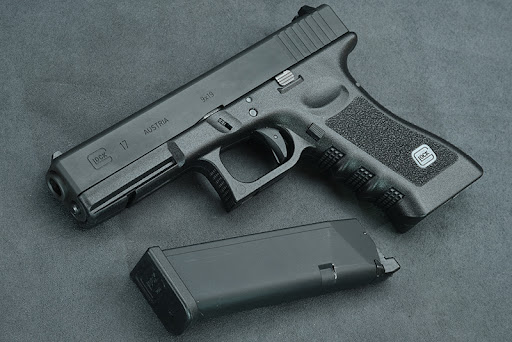

格洛克17手槍

克拉克17在1980年設計，是為了回應奧地利陸軍取代華瑟P38手槍的需求而製造的。1983年，該槍成為奧地利陸軍的制式手槍，被命名為P80（Pistole 80）。
克拉克17是目前全球執法單位最廣泛使用的手槍之一，而使用量最多的單位是菲律賓國家警察。除了軍警單位外，克拉克17在平民百姓、保安人員和私人軍事承包人員手上也頗為常見。多數使用者都是買來用於競技和自衛等用途，也有人用於犯罪。
另外，在流行文化方面，克拉克17及其衍生型均以現實世界上優秀的性價比而廣受角色歡迎。此外，前菲律賓總統貝尼格諾·艾奎諾也擁有同款手槍。
克拉克17及其衍生型都以其可靠性著稱。因為堅固耐用和簡化的設計，它們能在一些極端的環境下正常運作，並且能使用相當多種類的子彈，更可改裝成衝鋒手槍。而且它的零件數目也不多，因此維修相當方便，也因為發射的舒適性和性價比而令其一直保持著相當的人氣（槍管相對的較靠近握把，所以不需太大握力，也能減少後座力）。
和所有克拉克手槍一樣，克拉克17有三個安全裝置，但克拉克公司同時也推出連手動保險版本。據說克拉克手槍可於水下發射，但克拉克公司指出如在水中發射可能引至射手受傷。雖然不是水下手槍，但部分蛙人部隊會裝備克拉克17以應急之用。
特點：1.重量輕。採用大量工程塑料，造價低廉，手感好 2.萬無一失的保險機構 3.火力持續好 4.人機工效好。